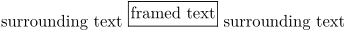
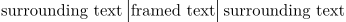
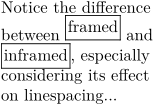
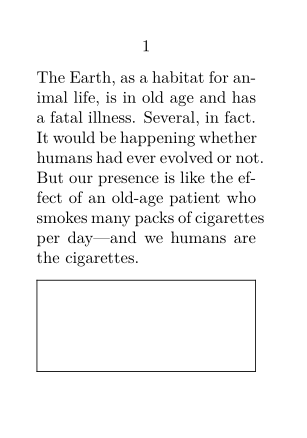

Contents
Summary
The command
\framed
is used for adding frames, backgrounds and styling to a segment of text.
Settings
Description
There are two variants of this command:
On top of that, you can define your own versions with:
There are quite a lot of options, see
Examples
Example 1
As its name suggests, \framed draws a frame around its argument. For example
-
\setuppapersize[A5] surrounding text \framed{framed text} surrounding text
- 
Notice that the bottom line of the frame is aligned with the baseline of text.
Framed little cousin, \inframed aligns the baseline of framed text with the baseline of surrounding text. For example,
-
\setuppapersize[A5] surrounding text \inframed{framed text} surrounding text
- 
The following example contrast the difference between framed and inframed.
-
\setuppapersize[A5] \setuplayout[width=10em] \setupalign[flushleft] Notice the difference between \framed{framed} and \inframed{inframed}, especially considering its effect on linespacing...
- 
A frame filling the bottom of the page
-
\setuppapersize[A8] \starttext \input ward \blank \framed[width=\textwidth,height=\dimexpr\pagegoal-\pagetotal-\lineheight\relax]{} \stoptext
- 